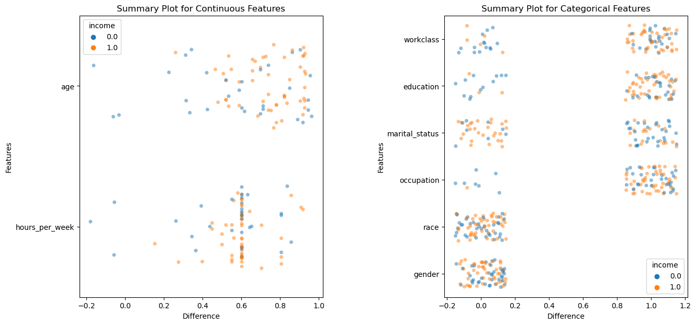

from relax.utils import load_json
from relax.module import PredictiveTrainingModule
from relax.trainer import train_model
from relax.evaluate import generate_cf_explanations
from relax.methods import VanillaCFPlotting
Plot the result of CF explanations.
SUMMARY_PLOT
relax.plots.summary_plot (exp, sample_frac=1.0, only_valid=False, figsize=(15, 7))
Globally visualize generated explanations.
INDIVIDUAL_PLOT
relax.plots.individual_plot (exp, idx, figsize=(15, 7))
Locally visualize individual explanations.
Example
We first use VanillaCF to generate Explanation.
# load configs
configs = load_json('assets/configs/data_configs/adult.json')
m_configs = configs['mlp_configs']
data_configs = configs['data_configs']
t_configs = dict(n_epochs=10, batch_size=256)
# load data and model
dm = TabularDataModule(data_configs)
model = PredictiveTrainingModule(m_configs)
# train predictive models
params, opt_state = train_model(model, dm, t_configs)
pred_fn = lambda x, params, prng_key: model.forward(params, prng_key, x, is_training=False)
# generate explanations
exp = generate_cf_explanations(
VanillaCF(), dm, pred_fn,
pred_fn_args=dict(params=params, prng_key=random.PRNGKey(0))
)To visualize individual explanation:
# this visualize the differences between `exp.X[0]` and `exp.cfs[0]`
fig = individual_plot(exp, idx=0)To analyze the entire explanation distribution:
fig = summary_plot(exp, sample_frac=0.01)